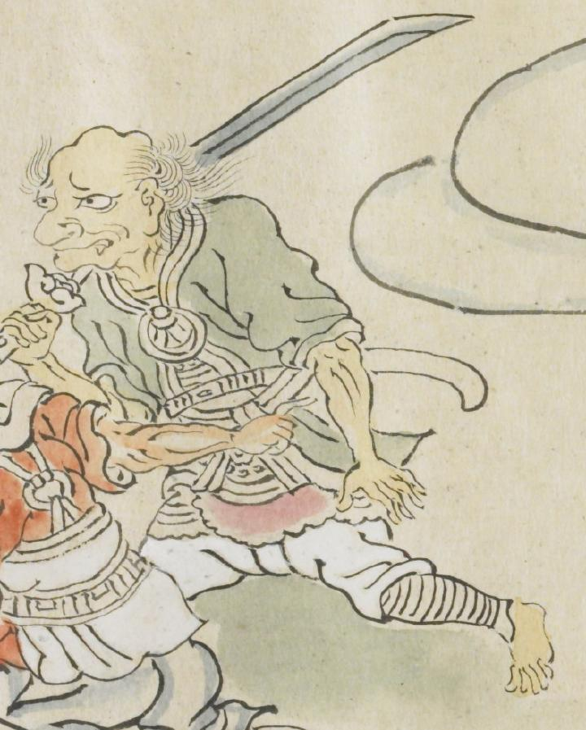

刀を担いだ黄色い体の鬼。緑の服に鎧を身にまとい、肩には刀を担いでいる。黄色い体をしており、口からは牙が2本生えている。
出典：親書誌：U426_nichibunken_0079：酒天童子絵巻；シュテンドウジエマキ／日付：2006／資源識別子：U426_nichibunken_0079_0002_0003
Copyright (c)2010- International Research Center for Japanese Studies, Kyoto, Japan. All rights reserved.